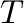
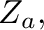
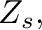
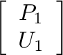
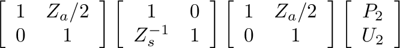
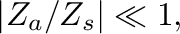
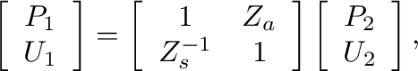
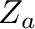
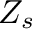

The model described by Keefe (1990) is an accurate representation for a tonehole unit, assuming adjacent tonehole interactions are negligible.
Keefe's original derivation of the tonehole parameters was based on a symmetric  section of serieis and shunt impedance terms, as shown in Fig. 11 (Keefe, 1981).
Figure 11:
section transmission-line representation of the tonehole.
The series impedance terms,  correspond to negative length corrections because the hole effectively reduces the air column length on either side.
The shunt impedance term,  characterizes the properties of the branch itself.
The transfer matrix that results under this analysis is given by


(16)
obtained by cascading the three matrices that correspond to the three impedance terms.
Based on the approximation that
 Eq. (16) can be reduced to the form

(17)
which is the basic tonehole unit cell given by Keefe (1981) for transfer-matrix calculations.
The values of  and  vary according to whether the tonehole is open (o) or closed (c) as
Figure 12:
Impedance magnitude and corresponding reflection function for six-hole flute (top 3 holes closed) defined in (Keefe, 1990) (see example6.m script).

![$\displaystyle \left[\begin{array}{cc} 1 + \frac{Z_{a}}{2 Z_{s}} & Z_{a} \left(1...
...} \end{array}\right] \left[\begin{array}{c} P_{2} \\ U_{2} \end{array}\right].$](img72.png)